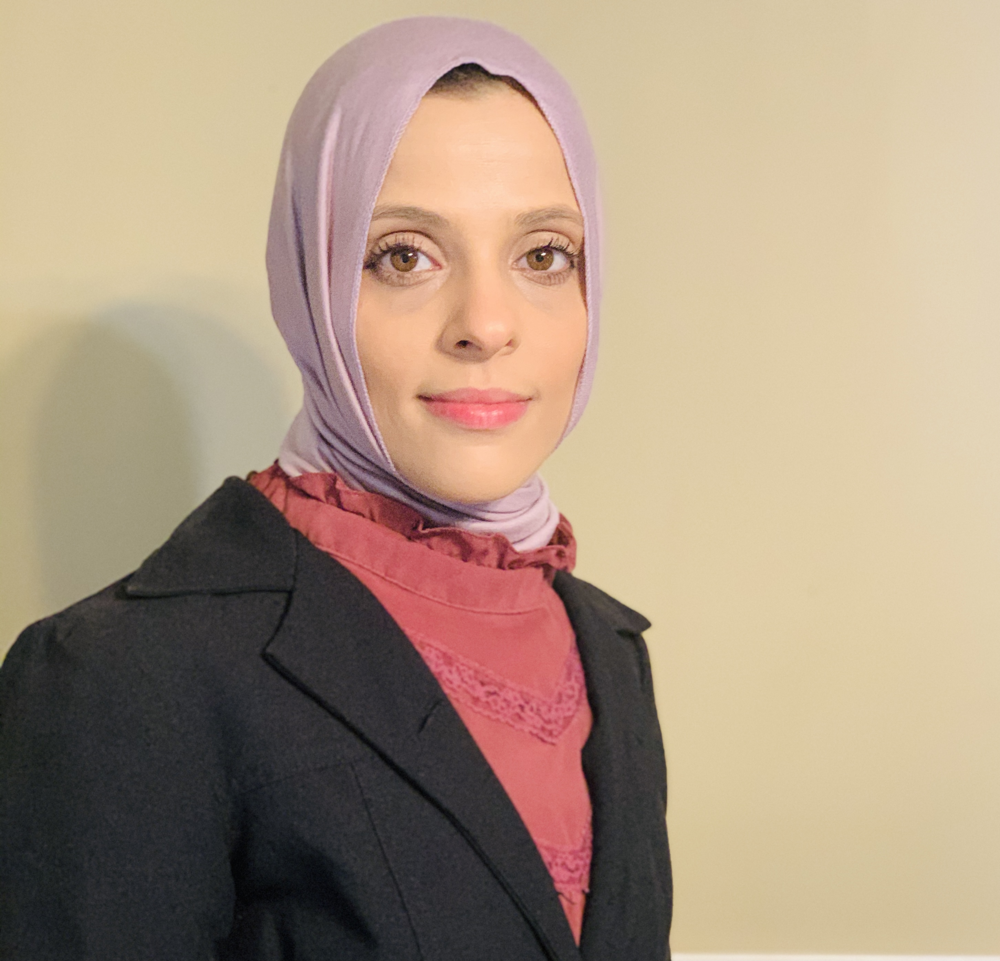
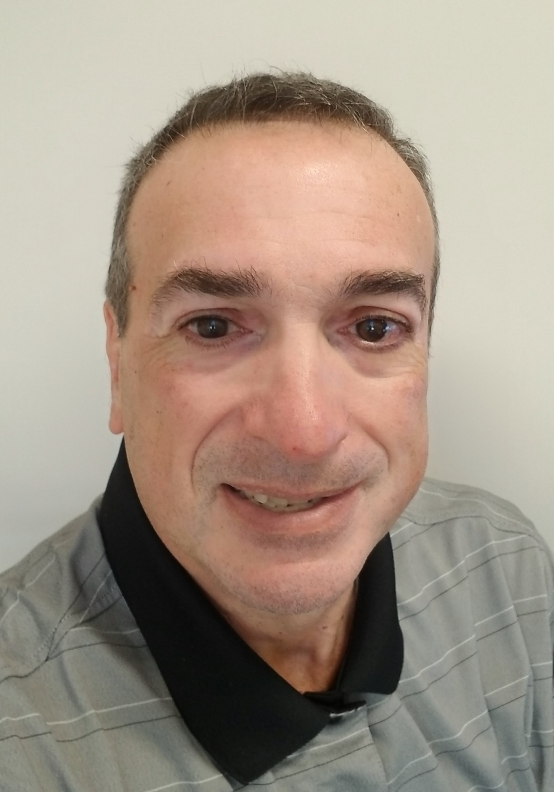
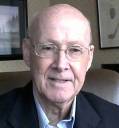

Meet the CIS Team!
Dina Abudaih

BIO: Dina Abudaih is an adjunct faculty member at Gwynedd Mercy University and La Salle University teaching Introduction to Desktop Computing, Business Applications and Intro to Computer Packages. Her teaching approach accommodates diverse learners and encourages group collaboration, creativity, and a contemporary learning environment. Her goal is to enhance the digital learning experience by providing hands-on training and an active learning environment. The goals of the course are to gain proficiency in file management, word processing, presentation, spreadsheet, and database concepts with hands‐on computer experience using Microsoft Office applications Excel, Access, Word, and PowerPoint. An overview of the Windows 10 operating system and basic computer hardware are covered as well. In addition to these technical hard skills, she focuses on the GMC outcomes objectives, which include skills in communication, leadership, problem solving and ethical and moral decision making.
Additional Information: Professor Abudaih enjoys being a professor at Gwynedd Mercy because of the sense of community/family, students having a passion for learning, and professors going out of their way to give students individualized attention. She enjoys Computer Science because it is a big part of our everyday life and is constantly changing the world. One of her favorite classes to teach is CIS101 because she enjoys watching newer students get to the "aha" moment when they realize that computers and productivity software can make their lives much easier. The skills taught in this class also translate into other classes, jobs, and personal life. One of her favorite experiences she's had with the students is when a simple conversation about food led to many students bringing in unique foods from their families and cultures. Last, her favorite part of a semester is when students work on their final projects because they are practical and bring all the skills developed earlier in the course together for one real life project.
Cindy Casey

BIO: Cindy Casey is the Program Coordinator and Professor of Practice for Gwynedd Mercy University's Computer Information Science Program for the School of Arts and Sciences. Professor Casey earned her MS in Economic Crime Forensics as well as a graduate certificate in Cybersecurity from La Salle University in Philadelphia, PA, where she graduated top of her class and was awarded a scholarship from the Association of Certified Fraud Examiner’s Philadelphia Chapter. Professor Casey also has a graduate certificate in Digital Forensics from DeSales University in Center Valley, PA; a BS in Computing Security and Technology from Drexel University, in Philadelphia, PA; and is currently a doctoral student pursuing a degree in Technology and Artificial Intelligence at Capitol Technology University in Washington, DC. Check out her full BIO here!
Additional Information: Professor Casey’s favorite classes to teach are Computer Forensics (CIS-340), Cybersecurity (CIS-241), and Introduction to Artificial Intelligence (CIS-115). She had an interesting start to getting involved with computer information science; She was always interested in machinery, and worked as a machinist operating drill press, die cutters, rivet machines, benders, corner cutters, and textile winders to create everything from wrought iron fences to ironing boards and hand grenade pins. She did sand blasting, spot welding and enjoyed tinkering with the equipment before being introduced to computers in the late 1980’s when a relative of hers gave her a used Commodore 64(C64). She taught herself web design after the birth of her first son because she had to find a way to work from home. She enjoyed coding and creating graphics, but did not originally go to college for computing, that came later when she decided to learn computer forensics and IT security. Her favorite part of being a Professor of Practice at Gwynedd Mercy is being able to shape the dynamically growing computing program. It is important to constantly reevaluate the curriculum to keep up to date with the latest trends and technologies in order to give our student an edge in the field. Students enrolled in the CIS program at GMercyU get to map their own career course and are encouraged to actively participate in their education to design a resume tailored to their desired career. She mentioned that in addition to classes with hands-on labs, students can work on research, earn certifications, participate in clubs, and gain valuable internship experience. One of her favorite times of the year is May when she can proudly watch CIS graduates receive their degrees (most with high honors and at least one job offer!).
William Ebersole
BIO: He has spent 26 years in the criminal justice system; the last 22 years were as a Special Agent of the Federal Bureau of Investigation (FBI). During this time, he worked on a variety of investigative classifications to include transnational organized crime, terrorism (both international and domestic), and white-collar crime. In his last few years with the FBI, he ran the On-Line Child Predator Task Force and Infragrad for 17 counties in Central Pennsylvania. Infragard is the FBI's public outreach for cybersecurity matters. He also developed sub-specialties as a Weapons of Mass Destruction Coordinator and Crisis Manager. He is admitted to the bar in Pennsylvania and also maintain an active license as a Certified Public Accountant (CPA). Prior to retirement, he obtained his Fraud Examiner's Certification and his Master's in Cybersecurity for LaSalle University, not too far from GMU! He retired from the FBI in 2017 and now works in corporate investigations.
Additional Information: William Ebersole’s interest in CIS first developed when he was assigned to coordinate the FBI's On-Line Child Exploitation Task Force in Central Pennsylvania. He realized that he needed to up his skill set if he was going to investigate and prosecute child predators. That is when he decided to get his master's in cybersecurity. He took up cybersecurity because he believed that the child predators would hide their tracks in the Dark Web the same way a hacker would. Cybersecurity also provided him with some digital forensic training which is necessary to handle electronic evidence in this arena. He truly enjoys the students, and GMercyU has a very diverse and talented group of students who are eager to learn. Teaching at GMercyU has taught him a lot about himself. He became a professor at GMercyU via Professor Cindy Casey. Professor Casey and him were in graduate classes together and he even had her for Cybercrime. Professor Casey is a hard person to say no to and he is glad he has the opportunity to work with her and the GMercyU community. So far, Cybercrime is his favorite class. There is always something in the news to talk about and the lessons are very practical; every day we can implement what we learn to protect ourselves from fraudsters, predators, and hackers. From his perspective, he believes the student experience at GMercyU is an immersive experience. Put another way, the students are exposed to a wide variety of computer related course work and also have other educational experiences that help produce very well-rounded graduates. He has had a number of positive experiences with students in the CIS program. Last semester, in Cybersecurity, the class conducted a tabletop exercise (TTX) to simulate a critical event in the life cycle of a digital network. He was impressed by the insight many of the students demonstrated as well as their ability to think outside of the box and implement creative solutions to problems presented in the assigned fact pattern. He feels as though he learned from the students in this exercise as well.
Howard Knorr

BIO: Howard Knorr has been president of Noetic Software, Inc. since 1993 and a lecturer of CIS at Gwynedd Mercy University since 2012. He earned his bachelor's in electrical engineering from Wilkes University and his master's in software development and management from the Rochester Institute of Technology.
Additional Information:
David Peltzman

BIO: David Peltzman, MS is a Professor of Practice for Gwynedd Mercy University's Computer Information Science (CIS) Program for the School of Arts and Sciences. Professor Peltzman received his undergraduate and graduate degree in Computer and Information Science from Temple University. Professor Peltzman spent a large part of his career at GlaxoSmithKline as an IT executive. He helped develop, deploy, and support innovative technologies for the pharmaceutical company spanning R&D, manufacturing, and commercial business. He then became a senior executive at an IT service provider called Alphanumeric Systems, Inc., where he helped set strategic direction and consulted with enterprise customers. He launched his own company called Autonomous Sports Systems, where he developed Artificial Intelligent systems for recognizing actions to aid in sports training. He has also served as an adjunct instructor at Rowan University at Burlington County and Chestnut Hill College. Professor Peltzman joined GMercyU as a full-time faculty member to support his passion for teaching and, in particular, teaching Artificial Intelligence in CIS.
Additional Information: When he was in high school, he was not really sure what he was going to do with his future. He always liked to tinker with things; take apart toys or appliances to see how they worked. He went to a small high school and they were able to get a teletype device which they could use to access a mainframe computer. He realized that he had a knack and love of computing. His course was set. He then went on to get his undergraduate and graduate degrees in Computer & Information Sciences. Since Gwynedd is a small school, he enjoys the ability to get to know and engage with students. He retired from the corporate world and started teaching. He was an adjunct at a few schools but wanted to become a full time faculty member. He started looking around the east coast and fortunately, the position at GMercyU became available at that time. I felt it was a great match. The courses related to Artificial Intelligence, Machine Learning and Robotics (which we have yet to offer as we are at the early days of the program). He likes teaching Introduction to Python and Computer Organization. He thinks their experience is that they have developing relationships with both their faculty and other students. He hopes they see that their faculty wants them to be successful even when the course material may be challenging. His first year teaching at Gwynedd was all remote due to Covid-19. Coming on campus and meeting students in person was a thrill for him. Many students were also very happy to meet him in person instead of just a talking head.
John Reilly

BIO: Experienced Technical Infrastructure Manager with a demonstrated history of working in the higher education industry and health care. Skilled in Domain Name System (DNS), Servers, Network Design, Networking, and Cisco Systems Products. Strong technical skills with Master’s degree focused in Cyber Security from Bellevue University.
Additional Information: Professor Reilly got started in Computer Science after hearing an ad about becoming Microsoft Certified through classes at Drexel University. He was beginning to get burnt out as a business owner and decided it may be time for a career change, so he gained his MS certifications then went back to Drexel to earn a BS degree in Computer Technology and Security. An interesting fact about Professor Reilly is that he worked in the IT department at GMercyU for 15 years, 5 of them as the Director of Enterprise Systems. He then moved to health care and other higher ed institutions while gaining a master’s degree in Cybersecurity with plans to teach in the future before coming back to Gwynedd Mercy in 2018 as an adjunct professor this time. He enjoys teaching students with real world experiences by explaining situations a student may face while working in IT that are not explained within a textbook. Some of his favorite classes to teach are networking, security, and systems administration. One of his favorite student experiences was working with a student to help them acquire their Cisco CCNA certification and discussing plans for the future with them. Professor Reilly thinks one of the best parts of being a student at Gwynedd Mercy is the individualized attention you get as a student from each of your professors, and the willingness to help when someone is having trouble in a course.
Gregg Starynski
BIO: He has always worked as a civilian engineer for the Department of the Navy. He started as a Naval Architect at the Philadelphia Naval Shipyard. When the Shipyard closed he became an Environmental Engineer at Naval Systems Engineering Station, Philadelphia. He finished the second half of his career at Space and Naval Warfare Systems command (SPAWAR). He was a program manager which designed and built the hardware, integrated the software, and installed Information Systems onboard Naval Vessels.
Additional Information: He worked 39 years as an engineer. He started on the drafting board, when CIS were primarily expensive mainframes used by research facilities. As the cost and size of computing came down, the availability went up. Drafting and design calculations that he once did by hand were then done with applications on the organization's server. He enjoys when students understand concepts for the first time. He had recently retired and ended up working as an Adjunct Teacher. He doesn’t really remember the specifics on how. He enjoys all the courses that he teaches. He discovered that he enjoyed the Art of Education, which was different from the pure technical work that he did. In light of the last 2 years of Covid craziness, he expects a much more exciting and dynamic student experience. The last two years have been a stinker for all of us. His general experience with the students are alot of learning, a few good Laughs, and Good grades.